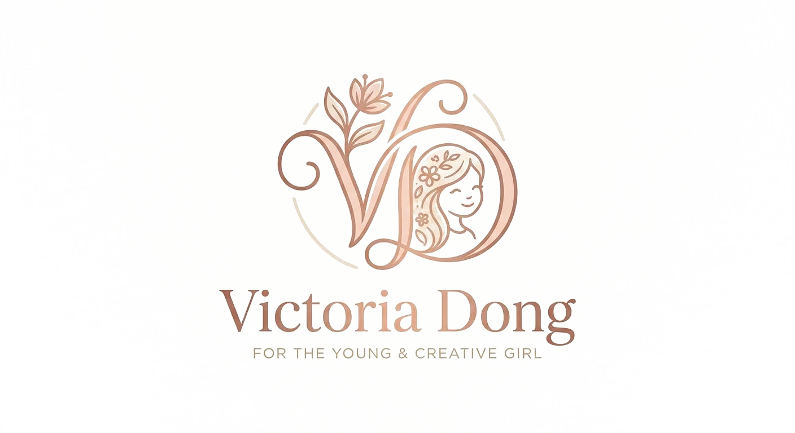

Welcome to my little gallery — a place to share the paintings I make, the things I love, and a bit of my story as I grow.
I love painting with oils and acrylics, and sketching whatever catches my eye. I think I first fell in love with color because of all the little things I care about — matching an outfit just right, picking the prettiest fruit off the vine, or noticing how the light looks on a snowy mountain.
This page is where I get to share my art as it grows with me — from my very first pieces to whatever I'm working on now.
See more of my life & travels →A growing collection of paintings and sketches — updated as I finish new pieces.
Art isn't the only thing that makes me who I am — here's a peek at the rest of my world.
Sewing tiny outfits for my dolls, crocheting little toys, designing bags, and doing my own nail art.
I love the feeling of running with my team and pushing myself further with every race.
Three years of weekly practice and counting — it's become a steady, happy part of my routine.
Winters mean flying down the mountain with my friends, chasing each other like little birds set free.
Putting outfits together just feels natural to me — it's another way I get to play with color and balance, same as painting.
We grow cucumbers, peaches, dragon fruit, and wax apples in our garden — and I insist on picking every single one myself.
I'm a cat person through and through — dogs are a little more than I can handle!
Thanks to all the speaking opportunities at school, standing up in front of a crowd feels natural to me now — I love sharing my ideas with confidence.
I love visiting new cities — getting to know the local customs, tasting the food, and seeing how art looks different from place to place.
Whether it's a question about my art, a kind word, or just to say hi — feel free to reach out.